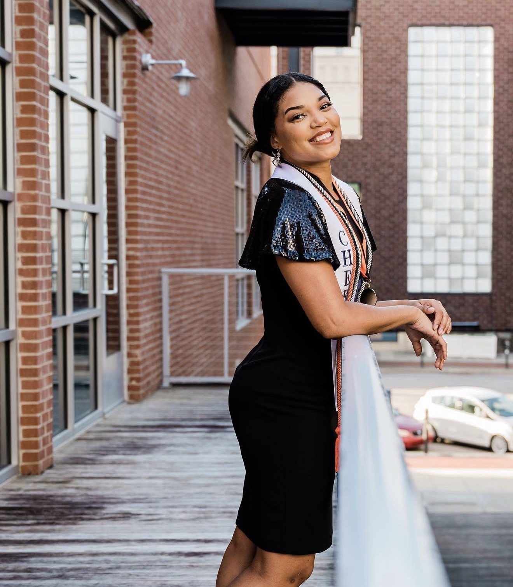
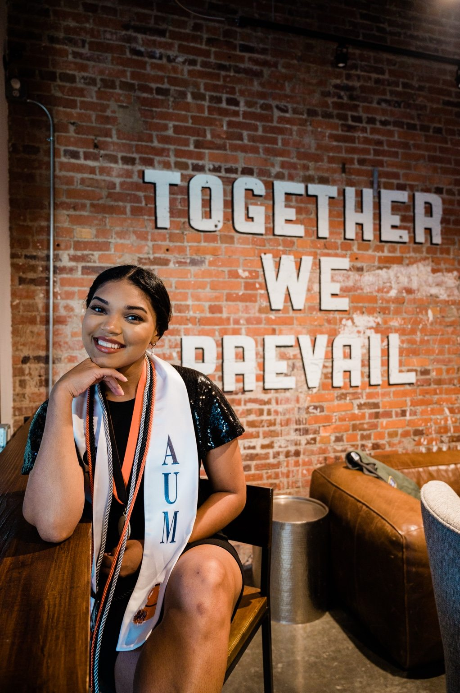
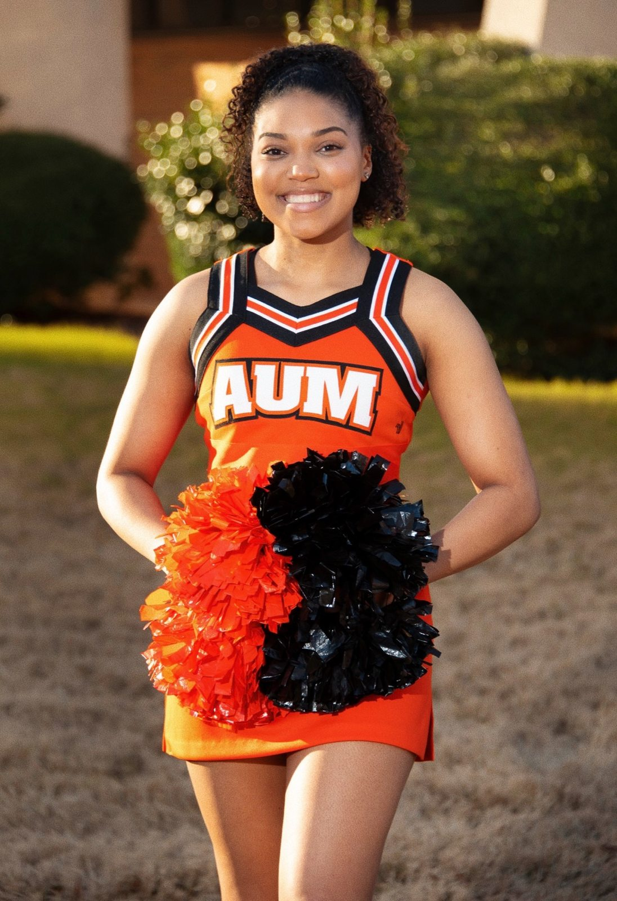

01 / Education
Learning as a foundation
Sierra earned her communications degree with a focus in public relations from Auburn University at Montgomery.
The world through Sierra’s eyes
Meet Sierra—a communicator, lifelong learner, sports enthusiast, and explorer who finds inspiration in the people and places around her.
 Meet Sierra ✦
Meet Sierra ✦Milestones & moments
From academic achievement to meaningful work and creative expression, each chapter reflects a love of learning.

Sierra earned her communications degree with a focus in public relations from Auburn University at Montgomery.

She developed her career through community engagement, public-sector communications, and her current Charter School Program grant role.

Dance, gymnastics, and college cheerleading helped Sierra combine creativity, teamwork, and determination.
In her own words
“I don’t take life too seriously and I love the creative process.”Read Sierra’s story